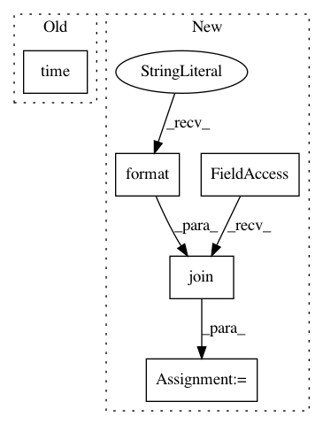

a49fe2e31f3db95fd0db897489cfad3e750c10e0,wandb/server/wandb_internal_server.py,Backend,setup,#Backend#,87
Before Change
settings = dict(
log_internal="internal.log",
files_dir=".",
_start_time=time.time(),
_start_datetime=datetime.datetime.now(),
disable_code=None,
code_program=None,
After Change
timespec = datetime.datetime.strftime(start_datetime, "%Y%m%d_%H%M%S")
wandb_dir = "wandb"
run_path = "run-{}-server".format(timespec)
run_dir = os.path.join(wandb_dir, run_path)
files_dir = os.path.join(run_dir, "files")
sync_file = os.path.join(run_dir, "run-{}.wandb".format(start_time))
os.makedirs(files_dir)
settings = dict(
log_internal=os.path.join(run_dir, "internal.log"),
files_dir=files_dir,
_start_time=start_time,
_start_datetime=start_datetime,
disable_code=None,
code_program=None,
save_code=None,
sync_file=sync_file,
_internal_queue_timeout=20,
_internal_check_process=0,
_disable_meta=True,
_disable_stats=True,
)
mp = multiprocessing
fd_pipe_child, fd_pipe_parent = mp.Pipe()
process_queue = mp.Queue()
// TODO: should this be one item just to make sure it stays fully synchronous?
req_queue = mp.Queue()
resp_queue = mp.Queue()
cancel_queue = mp.Queue()
notify_queue = mp.Queue()
use_redirect = True
wandb_process = mp.Process(
target=wandb_internal,
args=(
settings,
notify_queue,
process_queue,
req_queue,
resp_queue,
cancel_queue,
fd_pipe_child,
log_level,
use_redirect,
),
)
wandb_process.name = "wandb_internal"
wandb_process.start()
self.wandb_process = wandb_process
self.notify_queue = notify_queue
self._interface = interface.BackendSender(
process_queue=process_queue,
notify_queue=notify_queue,
request_queue=req_queue,
response_queue=resp_queue,
process=wandb_process,
)
def cleanup(self):
// TODO: make _done atomic
if self._done:
In pattern: SUPERPATTERN
Frequency: 3
Non-data size: 5
Instances
Project Name: wandb/client
Commit Name: a49fe2e31f3db95fd0db897489cfad3e750c10e0
Time: 2020-07-22
Author: jeff@wandb.com
File Name: wandb/server/wandb_internal_server.py
Class Name: Backend
Method Name: setup
Project Name: CellProfiler/CellProfiler
Commit Name: 2543affc67d5a1f4d61c050e280e096efa950afe
Time: 2018-05-04
Author: gandalfisarockstar@gmail.com
File Name: cellprofiler/modules/savecroppedobjects.py
Class Name: SaveCroppedObjects
Method Name: run
Project Name: openai/gym
Commit Name: 99845897314bf00d572201add9a5783784a712a1
Time: 2016-05-06
Author: gdb@gregbrockman.com
File Name: gym/monitoring/stats_recorder.py
Class Name: StatsRecorder
Method Name: flush